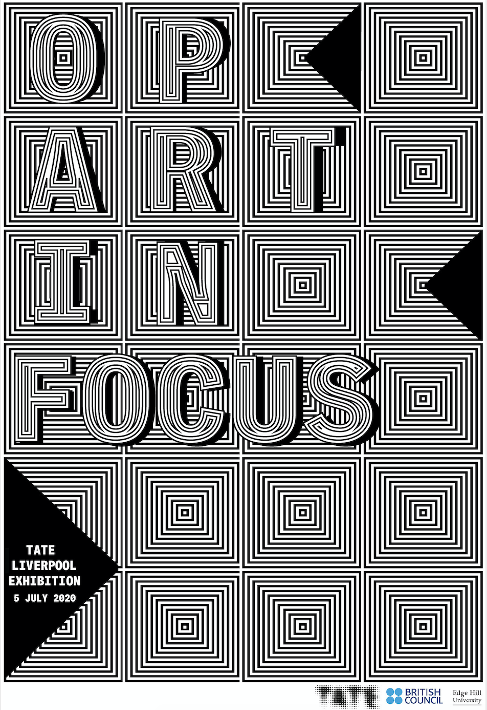

OP ART IN FOCUS |
|
|  |
Op Art in Focus is a part of Tate Liverpool's in Focus series - displays of the Tate collection dedicated to significant modern and contemporary artists or movements. In this project, we were asked to design a poster for the exhibition. I wanted to create an illusion with intertwined squares. |